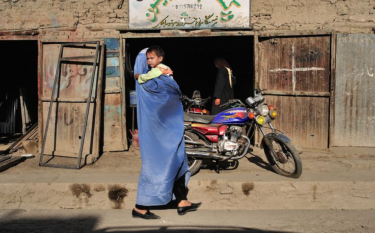

Les femmes méritent-elles vraiment moins ? : comment le terrorisme a ruiné l'Afghanistan
de la guerre américaine de 2001-2021 au conflit en cours avec le Pakistan et à l'oppression quotidienne des talibans depuis 1994

RAHS:
Organisation caritative fondée à Nouakchott, dédiée au soutien des peuples opprimés et vulnérables victimes des guerres et des crises.
Notre mission : apporter une aide humanitaire et sociale d'urgence aux populations de Gaza, du Soudan, d'Afghanistan, du Congo et à tous ceux qui souffrent en silence et parle en leur nom.
Nos domaines d'intervention : distribution alimentaire, soins médicaux, soutien aux orphelins, et aide aux familles déplacées.
Notre devise : Agir pour la dignité, soutenir par l’humanité, toujours parler pour ceux qui ne le peuvent pas.
de la guerre américaine de 2001-2021 au conflit en cours avec le Pakistan et à l'oppression quotidienne des talibans depuis 1994

L'Afghanistan, officiellement l'Émirat islamique d'Afghanistan, est un pays enclavé situé au carrefour de l'Asie centrale et de l'Asie du Sud.
Depuis la fin des années 1970, l'histoire de l'Afghanistan a été dominée par de vastes conflits, y compris des coups d'État, des invasions, des insurrections et des guerres civiles.
Cette période d'instabilité a commencé en 1973. Les Talibans contrôlaient la majeure partie du pays en 1996, mais leur Émirat islamique d'Afghanistan a reçu peu de reconnaissance
internationale avant sa chute lors de l'invasion américaine de l'Afghanistan en 2001. Les Talibans sont revenus au pouvoir en 2021 après avoir capturé Kaboul, mettant fin à la guerre de 2001-2021.
Le gouvernement taliban est largement non reconnu par la communauté internationale en raison des violations signalées des droits de l'homme en Afghanistan, en particulier concernant le traitement des femmes par les Talibans.
.jpg)
Les guerres qui ont conduit à ce qui se passe en Afghanistan en ce moment
Les talibans sont apparus en 1994 comme une faction importante lors de la deuxième guerre civile afghane (1992-1996) et étaient en grande partie composés
de seigneurs de guerre des régions pachtounes de l'est et du sud de l'Afghanistan. Sous la direction de Mollah Omar, le mouvement s'est étendu à la majeure partie de l'Afghanistan,
déplaçant le pouvoir de l'État islamique d'Afghanistan ainsi que d'autres militants moudjahidins. Les talibans ont saisi Kaboul en 1996 et ont établi le premier Émirat islamique d'Afghanistan,
qui était opposé par l'Alliance du Nord, laquelle a conservé la reconnaissance internationale en tant que continuation de l'État islamique.
La guerre en Afghanistan englobe le conflit dirigé par les États-Unis de 2001 à 2021 et les affrontements en cours en 2026 entre le Pakistan et l'Afghanistan,
tous deux enracinés dans le terrorisme, l'insurrection et les disputes sur la sécurité régionale. La guerre dirigée par les États-Unis en Afghanistan a commencé en octobre 2001,
suite aux attentats du 11 septembre orchestrés par al-Qaïda, qui était hébergée par le régime taliban en Afghanistan. L'objectif initial était de démanteler al-Qaïda et de retirer les talibans du pouvoir.
Les forces américaines et britanniques, aux côtés de l'Alliance du Nord, ont rapidement capturé les principales villes, y compris Kaboul et Kandahar, renversant le gouvernement taliban en décembre 2001.
Une nouvelle Administration intérimaire afghane a été établie et des efforts internationaux de reconstruction ont commencé, y compris la formation des Forces nationales afghanes de défense et de sécurité (ANDSF)
et la Force internationale d'assistance à la sécurité (FIAS) sous la supervision de l'OTAN.
Malgré ces efforts, les Taliban se sont réorganisés et ont lancé une insurrection généralisée en 2003, utilisant des tactiques de guérilla, des attaques suicides et une guerre asymétrique.
Le conflit a escaladé avec des renforts de troupes, notamment sous la présidence d'Obama en 2009, atteignant un pic d'environ 140 000 soldats étrangers. Les événements clés incluent la mort
d'Oussama ben Laden au Pakistan en 2011 et l'accord de paix final entre les États-Unis et les Taliban en 2020, qui fixait un calendrier pour le retrait des troupes américaines. En août 2021,
les Taliban ont lancé une offensive rapide, reprenant le contrôle de l'Afghanistan, y compris Kaboul, mettant effectivement fin à la guerre de 20 ans.
La guerre au Pakistan est un conflit en cours déclenché par des attaques transfrontalières et des opérations militaires croissantes, impliquant à la fois les nations et des groupes militants comme le TTP,
avec des pertes civiles et militaires importantes. Le conflit découle de tensions de longue date concernant la ligne Durand, la frontière contestée de 2 640 kilomètres établie en 1893, que l'Afghanistan n'a jamais officiellement reconnue.
Les relations se sont détériorées après le retour au pouvoir des Talibans en Afghanistan en 2021, le Pakistan accusant les Talibans afghans d'abriter le Tehrik-e-Taliban Pakistan (TTP),
responsable de nombreuses attaques à l'intérieur du Pakistan. Des escarmouches précédentes en octobre 2025 ont conduit à un cessez-le-feu fragile, mais des affrontements de faible intensité ont persisté le long de la frontière.

Le sexisme et les crimes sont commis quotidiennement contre les femmes
Les femmes afghanes font face à une exclusion systématique de l'éducation, de l'emploi et de la vie publique sous le régime taliban,
créant une crise humanitaire et un apartheid basé sur le genre. Depuis que les talibans ont repris le pouvoir en août 2021,
les femmes afghanes ont été soumises à des restrictions sévères qui ont effacé des décennies de progrès. Les femmes sont interdites
d'éducation au-delà de la sixième année, interdites d'exercer la plupart des professions, et exclues des espaces publics tels que les parcs,
les salles de sport et les salons de beauté. Elles doivent être accompagnées d'un tuteur masculin en public, porter la burqa, et se voient souvent
refuser l'accès aux soins de santé et aux services humanitaires en raison de restrictions basées sur le genre. Ces mesures ont été décrites
comme un apartheid de genre, retirant systématiquement les femmes des systèmes et institutions publics.
L'exclusion des femmes a créé une crise humanitaire profonde. Près de 80 % des jeunes femmes afghanes sont exclues de l'éducation,
de l'emploi ou de la formation, et les restrictions imposées aux enseignantes et aux professionnelles de la santé menacent la prestation de services essentiels.
L'UNICEF estime que l'Afghanistan risque de perdre plus de 25 000 enseignantes et professionnelles de la santé d'ici 2030, ce qui aurait un impact sévère sur
l'éducation des enfants et la santé maternelle et infantile. L'absence des femmes dans la vie publique exacerbe également les problèmes de santé mentale,
68 % déclarant une mauvaise santé mentale et un taux accru de suicides parmi les femmes.
Les femmes afghanes ont connu des cycles de réformes et de répressions. Les réformes du début du XXe siècle sous le roi Amanullah Khan et la reine Soraya ont promu l'éducation,
la participation publique et les libertés sociales pour les femmes, mais ces acquis ont été annulés après un retour de bâton politique. Pendant l'occupation américaine (2001–2021),
les femmes ont eu accès à l'éducation, à l'emploi et à la représentation politique, y compris des postes au parlement et dans la magistrature. Le retour des talibans a annulé ces avancées,
réinstaurant une stricte ségrégation des sexes et limitant l'autonomie des femmes.